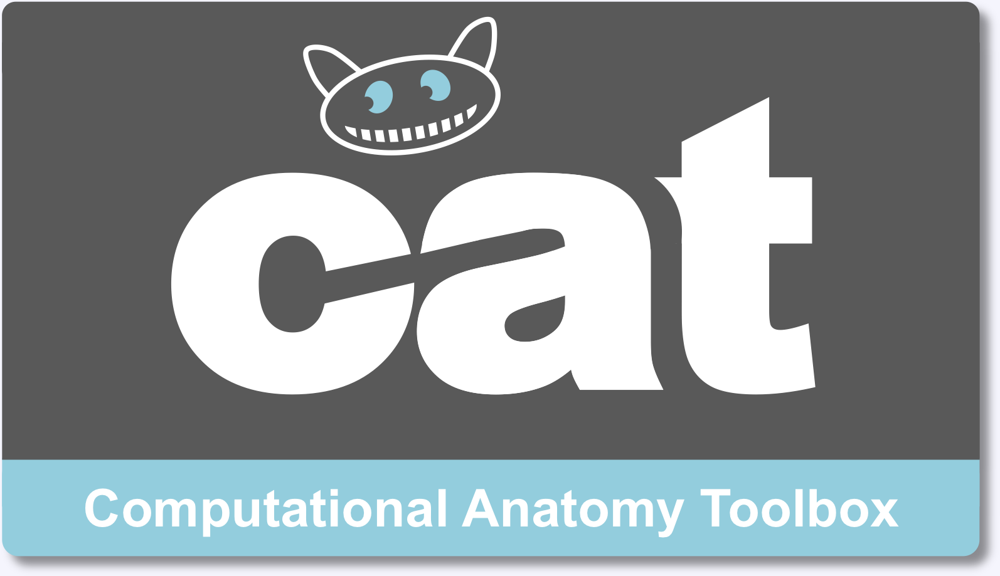

This is CAT12 r853 (2016-02-04)
You can update your copy of CAT12 here: Check for update.
If you happen to find any bug, please report them at christian.gaser@uni-jena.de.

Description
This toolbox is a an extension to SPM12 (Wellcome Department of Cognitive Neurology) to provide computational anatomy. This covers diverse morphometric methods such as voxel-based morphometry (CAT), surface-based morphometry, deformation-based morphometry (DBM), and ROI- or label-based morphometry. It is developed by Christian Gaser and Robert Dahnke (Jena University Hospital, Departments of Psychiatry and Neurology) and free but copyright software, distributed under the terms of the GNU General Public Licence as published by the Free Software Foundation; either version 2 of the Licence, or (at your option) any later version.